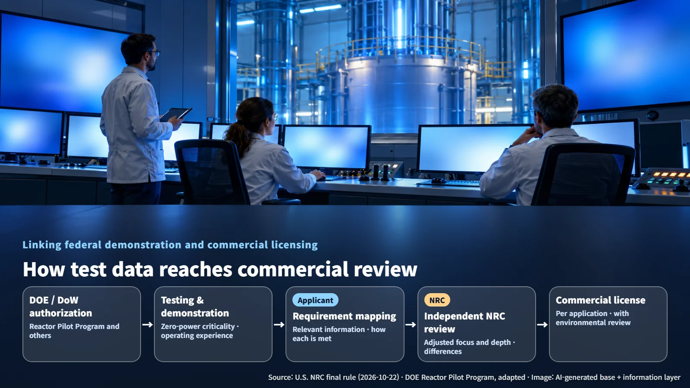
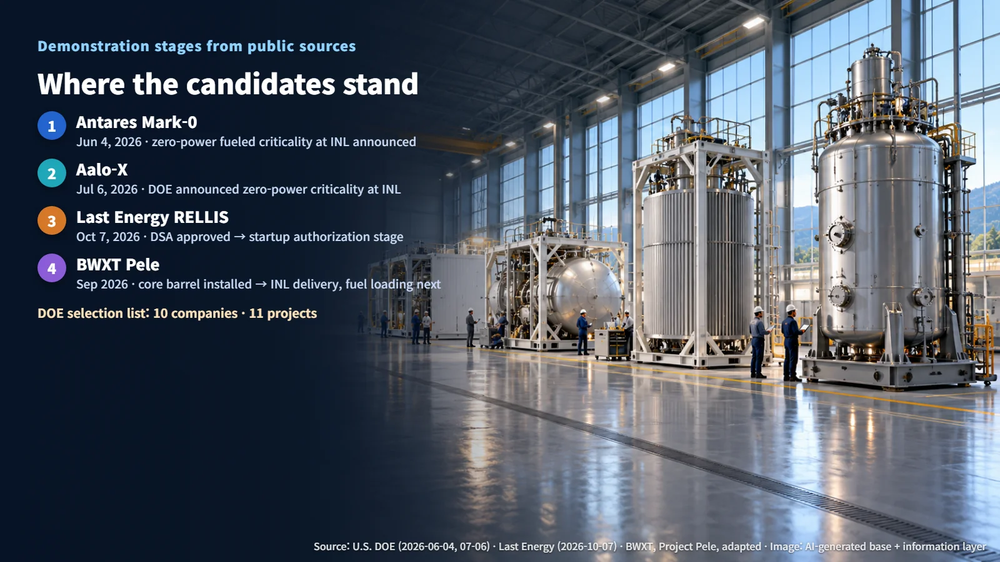

US Regulation · Advanced Reactors
From Government Test Reactor to Commercial License: What the NRC's New Rule Changes
A new NRC final rule lets applicants use data from DOE- or Department of War-authorized demonstration reactors, while the NRC keeps its independent safety judgment.
Before a new reactor can sell a single kilowatt-hour, it has to pass through two doors. The first is demonstration: building and testing the reactor under a government-led program. The second is a license from the regulator for commercial operation. So what happens to that second review when the government has already authorized a reactor and watched it run its tests? The U.S. Nuclear Regulatory Commission (NRC) has now finalized a rule that answers exactly that question.
October 22: The NRC's Final Rule
In a final rule signed on October 22, 2026, the NRC set out in writing a pathway for using data from reactors that the U.S. Department of Energy (DOE) or the Department of War has authorized, and has tested and demonstrated to perform their safety functions, in commercial licensing. The American Nuclear Society (ANS) reported the news the same day. The rule amends two parts of the federal regulations, 10 CFR Part 50 and Part 53.
The heart of the rule fits into two phrases. Applicants may include relevant information from the demonstration facility in their license application, and they identify, item by item, how the existing authorization satisfies the NRC's requirements. Picture a student transferring schools who hands over a transcript along with a table matching each completed course to a specific graduation requirement at the new school. That is very close to how the new pathway works.
The final judgment stays with the NRC. The agency keeps its safety findings and its independent regulatory responsibility, and it uses that mapping to adjust the focus and depth of its review. Areas such as consequence analysis (the assessment of radiological effects during an accident), natural hazards, and materials qualification may still receive additional review.
Why It Exists: Linking Federal Demonstrations to Commercial Review
Since the 1970s, the NRC has drawn on materials test data and analysis-code validation data produced by DOE and the national laboratories. More recently, demand has grown to carry forward the experience of actually building and operating whole reactors, or major parts of them, under federal authorization into commercial designs. The scope of usable evidence has widened from individual test results to reactor-scale demonstration experience.
The policy starting point is Executive Order 14300, issued on May 23, 2025. That order called for a follow-on review pathway for designs authorized and demonstrated by DOE or the Department of War. Meanwhile, the DOE Reactor Pilot Program, established under EO 14301, is speeding up testing of demonstration designs. DOE's program runs the tests, and the NRC's rule carries the results into commercial review. The two pieces are built to work as a relay.

The practical connections are also being prepared. In a draft interim staff guidance (ISG) issued in April 2026, the NRC organized 10 foundational safety areas, including quality assurance, source term (the quantity and types of radioactive material that could be released in an accident), emergency response, and site and external hazards. An addendum to the DOE–NRC memorandum of understanding covers cooperation on using a demonstration facility's safety analysis in the later licensing review.
Which Reactors Could Use It: Candidates at Different Stages
DOE's selection list includes 11 projects from 10 companies. Based on public information, the leading projects sit at different stages:
- Antares Mark-0: On June 4, 2026, a zero-power fueled criticality demonstration at Idaho National Laboratory (INL) was announced.
- Aalo-X: On July 6, DOE announced completion of a zero-power criticality demonstration at INL. According to the developer's documents, it is a 30 MWth, 10 MWe design.
- Last Energy RELLIS test reactor: Its Documented Safety Analysis (DSA) was approved on October 7, and it is now at the stage of passing a readiness review to receive startup authorization. The commercial product, the PWR-20, is a 20 MWe pressurized water reactor.
- BWXT Pele: The core barrel cartridge installation was completed in September, and delivery to INL, fuel loading, and demonstration testing are scheduled.
Zero-power criticality is a test in which a nuclear chain reaction is held steady at a very low power level. This test provides experience with a controlled chain reaction, while full-power operation adds information on heat removal, fuel, and operational transients. That is why demonstration data earns its place in a license review function by function, according to what the data has actually proven.

When the design or site changes, those differences become the center of the review. The final rule gives weight to differences in design, function, hazards, site, and safety assumptions, and the draft ISG explains that the larger the site differences, the more limits there may be on streamlining the review. At a new site with different earthquake, flood, or weather conditions, an evaluation tailored to that site is added.
Next Steps: Effective Date and First Applications
The Federal Register public inspection version states that the rule is scheduled for publication on October 26 and takes effect 30 days after publication. The publication date in the ANS report is stated differently, so the confirmed effective date will come from the official published version.
The NRC Chairman has set review targets of about 18 months for a first-of-a-kind design and about 12 months for a repeat design. These targets may vary depending on what each application contains. Individual licensing actions are accompanied by an Environmental Impact Statement (EIS), an Environmental Assessment (EA), or an applicable exclusion process. Part 57 for microreactors is a separate rule proposed in May 2026 and is currently at the proposed rule stage.
The points to watch from here are publication and the effective date, the release of final review guidance, and how the first applicant explains the applicability of its demonstration data and what supplemental information the NRC requests. How smoothly the records built up in government test reactors carry over into the safety case for commercial power plants will become clear in that first case.